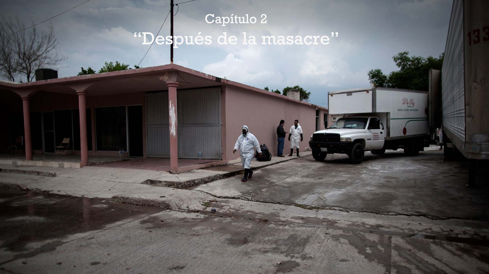
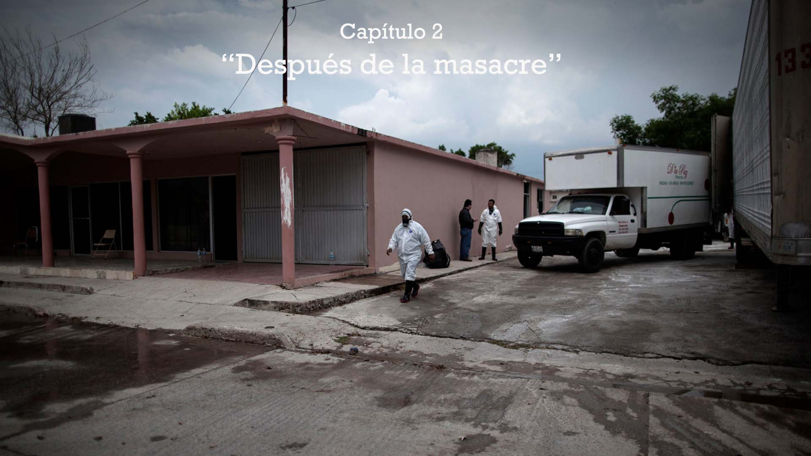

Capítulo 2
"Después de La Masacre"
 THIS IS THE FINAL IDEA

THIS IS THE FINAL IDEA

Levantamiento de los cuerpos
{{read_file("_textos/cap2-intro.md")|markdown}}Base Naval

Funeraria
El 25 de agosto, enviaron 23 cuerpos a una funeraria en San Fernando; en la funeraria algunos cuerpos quedaron tirados en el piso por falta de espacio para su revisión, y otros en bolsas de plástico en la caja de un tráiler, según el relato de la Comisión Nacional de Derechos Humanos. Como si fueran los restos de algún animal apestoso, al menos 56 cuerpos fueron rociados con cal, lo que provocó destrucción de rasgos. Sus familias tampoco pudieron identificarlos.


Version Embajada EUA
{{texto}}
COlumna 3